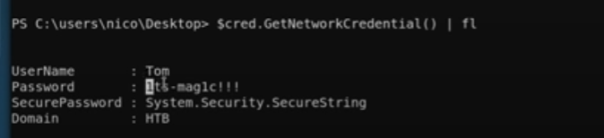

Check user and groups
whoami
net user <username>
Have a quick look a round user's desktop
and other common locations
Run winPEAS with fast, searchfast, and cmd options
Run Seatbelt
Strategy --> spend more time in enumeration and avoid rabbit holes
Try things that don't have may steps first
--> Registry exploit, services, etc.
Look at admin process, enum version and search for exploit
check for internal ports that might be able to forward to the attacking machine
re-read enum
Think about kernel exploits
Search file
dir "\*<filename>*" /s
Grep all password
type * | findstr password
Unquoted Services Paths
Get-CIMInstance -class Win32_Service -Property Name, DisplayName, PathName, StartMode | Where {$_.StartMode -eq "Auto" -and $_.PathName -notlike "C:\Windows*" -and $_.PathName -notlike '"*'} | select PathName,DisplayName,Name
Check Running Services
Get-Services |where {$_.Status -eq "Running"}
Have Password in Secure String?
$pass = "........." |convertto-securestring
$user = "<domain>\<username>"
$cred = New-Object System.Management.Automation.PSCredential($user, $pass)
$cred.GetNetworkCredential() | fl

or goto [Active Directory] > [Powershell] > [Login with another user in AD]